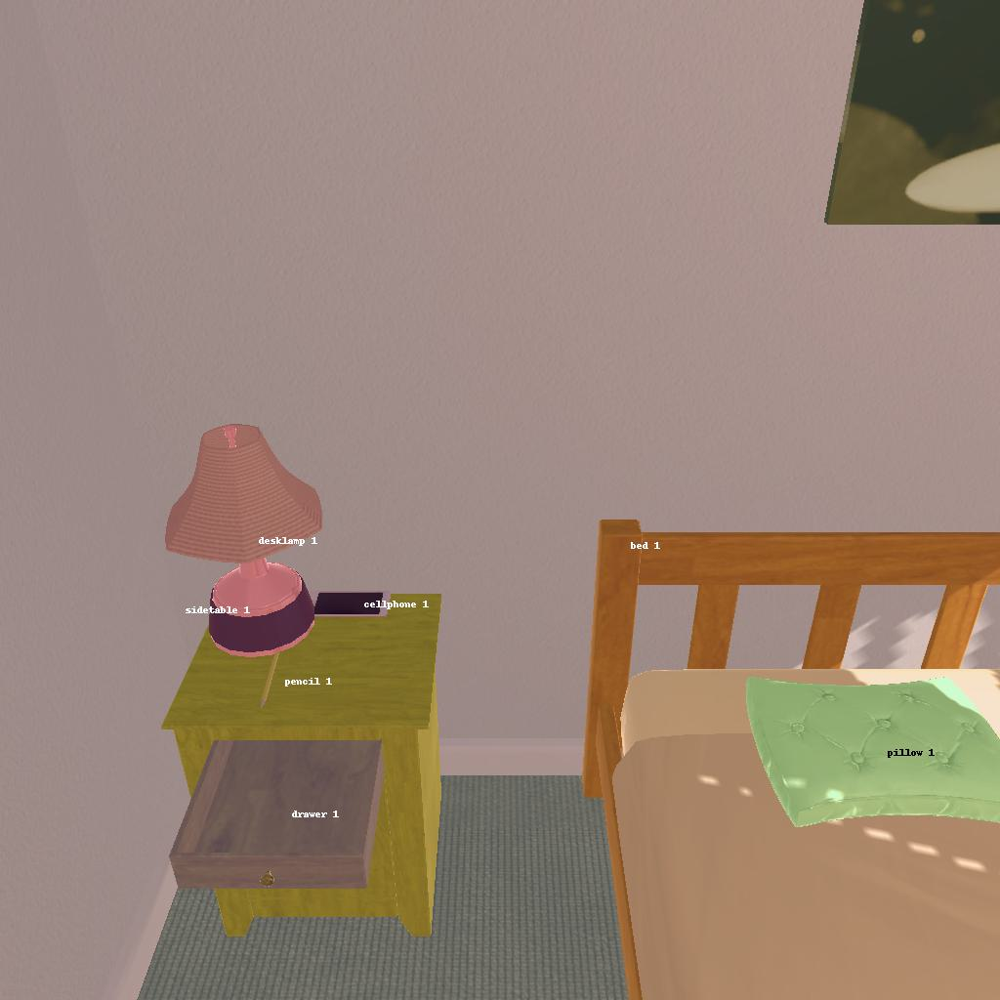
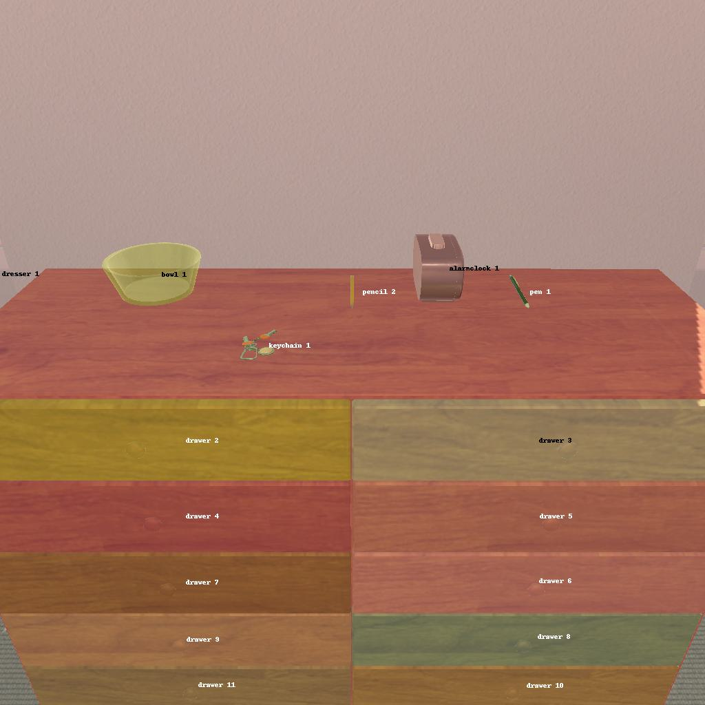

---------------------------------------------------------task: 0---------------------------------------------------------
--------------------------------------------------------------------------------------------------------------------------------------------------------------------
--------------------------------------------------------------------------------------------------------------------------------------------------------------------
Step:--------------------------------------------------------------------------6-------------------------------------------------------------------------------
----------------------------------------
VLM Prompt:
Image1:
Image2:
Image3:
**Instruction**
1. Analyze the provided image to identify all visible household objects, focusing on those relevant to the task description "examine the alarmclock with the desklamp."
2. Use the analysis of the image and the task hint "The agent must find an object of the desired type, locate and turn on a light source with the desired object in-hand." to answer the question: what is the most reasonable action in the choices for the task description "examine the alarmclock with the desklamp"?
4. Decide and write the answer using the template: The answer is: (i): , where i is the real number. If there is no desired object in the image, search every place based on **Initial Observation** to find the object. And if no one is exactly correct, choose a similar answer.
**Initial Observation**
You are in the middle of a room. Looking quickly around you, you can see bed (1), sidetable (1), drawer (1-11), dresser (1), safe (1), laundryhamper (1), garbagecan (1)
**Answer Choices**
(1): go to bed 1
(2): go to drawer 1
(3): go to dresser 1
(4): go to drawer 3
(5): go to drawer 4
(6): go to drawer 5
(7): go to drawer 6
(8): go to drawer 7
(9): go to drawer 8
(10): go to drawer 9
(11): go to drawer 10
(12): go to drawer 11
(13): go to safe 1
(14): go to laundryhamper 1
(15): go to garbagecan 1
(16): take pillow 1 from sidetable 1
(17): take cellphone 1 from sidetable 1
(18): take pencil 1 from sidetable 1
(19): use desklamp 1
(20): examine sidetable 1
**Answer**
Let's think step by step by following the instructions.
----------------------------------------
----------------------------------------
Original Response:
The task is to "examine the alarmclock with the desklamp." From the images provided, in Image2, we can see an "alarmclock 1" on the dresser 1. We also see a "desklamp 1" on the sidetable 1 in Image1 and Image3. The hint suggests that the agent needs to find the alarm clock and then locate and turn on a light source with the alarm clock in hand.
Based on the Initial Observation, all the drawers, bed, dresser, safe, laundry hamper, and garbage can are visible objects in the room. Since the alarm clock is already identified on the dresser 1, there's no need to search the other objects.
To examine the alarm clock with the desklamp, the agent must first go to the dresser where the alarm clock is located, and then use the desklamp to have enough light for examination. The reasonable actions would be to go to the dresser 1, take the alarm clock, and then use the desklamp. However, since there's no option to "take alarmclock 1 from dresser 1," we need to choose the most similar answer to the needed actions.
The answer is: (3): go to dresser 1 (to be near the alarm clock) and then (19): use desklamp 1 (to examine the alarm clock with light). However, since we must select one action, the first step is to go to the dresser to be in proximity to the alarm clock.
The answer is: (3): go to dresser 1.
----------------------------------------
----------------------------------------
>>> Refine Original VLM Response and Get Pure Action: go to dresser 1 (to be near the alarm clock) and then (19): use desklamp 1 (to examine the alarm clock with light)
----------------------------------------
-----------------------------------------------------------------
Running time: 13.752959489822388 seconds
Total Money: 0.22246000000000002
-----------------------------------------------------------------
-----------------------------------------------------------------
Text Observation:Nothing happens.
-----------------------------------------------------------------
UNSUCCEED